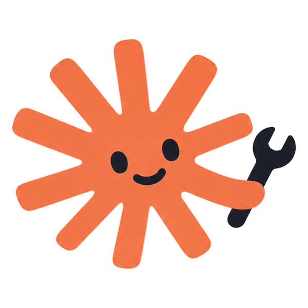
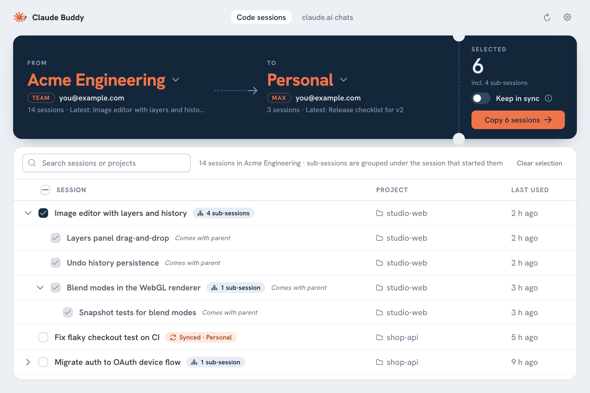
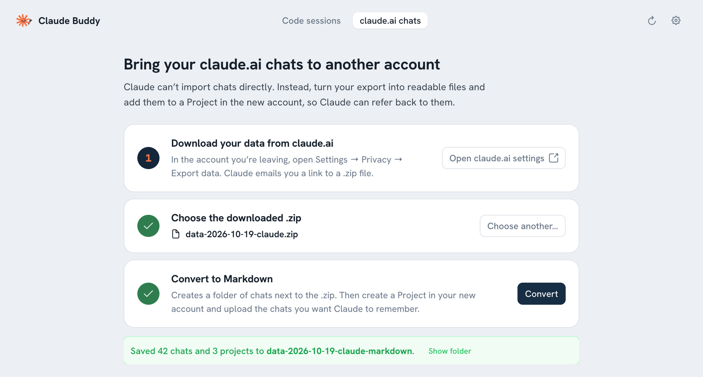

Free · Open source · Windows, macOS, Linux
Move your Claude Code sessions to another account.
Claude Buddy copies Claude Code sessions to a different Claude account or organization, with the full conversation history and every sub-session. Hit a usage limit? Keep a session in sync and carry on in your other organization. It also turns your claude.ai chats into files you can bring along.


Everything comes along
Switching from a work organization to your personal plan, or moving to a new account? Your sessions don’t have to stay behind.
Full conversation history
Each copy carries its entire transcript, project folder, model and settings, so you can carry on exactly where you left off.
Sub-sessions included
Sessions started from another session are shown under their parent. Copy the parent and all of its sub-sessions come with it, in the same structure.
Keep going past usage limits
Turn on Keep in sync and both organizations share one conversation. When one hits its limit, switch and continue in the other. Later, switch back and pick up the latest progress.
Names you recognise
Organizations show up the way Claude shows them, such as “Developers · Team” or “Personal · Max”, along with the account email.
Nothing leaves your computer
Your originals are never changed. Claude Buddy works only with the Claude app’s files on your computer, makes no network requests, and never reads passwords or tokens.
Command line too
Prefer a terminal? Everything the app does also works from the command line, ready for scripts. For example, claude-buddy copy --sync.
How it works
It takes about a minute.
Sign in once
In the Claude desktop app, sign in to the account or organization you’re moving to, so it appears in Claude Buddy.
Pick and tick
Open Claude Buddy, choose From and To, and tick the sessions you want. Search helps with long lists.
Copy and reopen
Click Copy, reopen the Claude desktop app and switch organization. Your sessions are in the sidebar.
Bring your claude.ai chats too
Claude can’t import chats into another account. Claude Buddy turns your official claude.ai data export into readable Markdown files, one per chat. Your projects’ instructions and documents come too. Upload them to a Project in the new account, and Claude can refer back to them.

Questions
Can I move Claude Code sessions to a different Claude account or organization?
Yes. Claude Buddy copies sessions from the Claude desktop app’s Code tab into another account or organization on the same computer, with the full conversation history. Sign in to the destination once in the Claude desktop app so it shows up in Claude Buddy.
I hit my Claude usage limit. Can I continue the same session in another account?
Yes. Copy the session with Keep in sync turned on. Both organizations then share one conversation, so you can continue in the other one and later switch back to pick up the latest progress. Work in one organization at a time. Rewinding a synced session splits it off into its own copy.
Can I transfer claude.ai chats to another account?
Not as native chat history, because Claude has no import feature. Claude Buddy converts your claude.ai data export (Settings → Privacy → Export data) into Markdown files that you upload to a Project in the new account.
Does it copy sub-sessions?
Yes. Copying a parent session copies everything below it and keeps the structure. You can also copy a single sub-session on its own; it becomes a regular session.
Is it safe? Will it change my sessions?
Originals are never changed. Claude Buddy only adds new copies. It makes no network requests and doesn’t read passwords, tokens or cookies. The code is open source on GitHub.
Why does my computer warn me when I open it?
The downloads aren’t code-signed yet. On a Mac, right-click the app and choose Open. On Windows, choose More info → Run anyway. Or run it from source with Python.
What about sessions from the claude terminal command?
Those aren’t tied to an account. claude --resume already works after you switch accounts.
Is Claude Buddy made by Anthropic?
No. It’s an unofficial, community-built tool and isn’t affiliated with Anthropic.